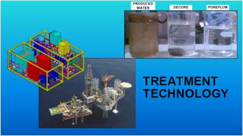

Supplier & Trading
Penyediaan material industri dengan spesifikasi yang disesuaikan untuk kebutuhan proyek.
Supplier • Trading • Electrical • Instrumentation • Water Treatment • Oil & Gas Services
+62 21 706 87829PT. Adi Santosa
Menyediakan produk, keahlian engineering, dan layanan profesional untuk mendukung kebutuhan proyek electrical, instrumentation, water treatment, serta oil dan gas.
Bidang Usaha
PT. Adi Santosa berkembang dari usaha supplier electrical, instrumentasi, dan water treatment dengan dukungan sumber daya manusia serta kepercayaan principal.
Penyediaan material industri dengan spesifikasi yang disesuaikan untuk kebutuhan proyek.
Dukungan pekerjaan kelistrikan yang mengutamakan kualitas, ketepatan, dan kebutuhan operasional.
Solusi instrumentasi dan kontrol sebagai bagian dari sistem proses industri.
Solusi untuk mendukung kebutuhan pengolahan air dalam lingkungan industri.
Layanan dan dukungan produk untuk pekerjaan di sektor perminyakan dan gas.
Lingkup process, mechanical, civil, electric, instrument, dan control.

Profil Perusahaan
PT. ADI SANTOSA adalah suatu bentuk badan hukum yang mempunyai tujuan usaha di berbagai bidang, antara lain sebagai usaha Supplier, Trading, Electrical, Instrumentation, Water Treatment dan Oil & Gas Services.
Merupakan suatu kehormatan bagi kami untuk berkomitmen memberikan kepuasan customer melalui pelayanan dan kualitas terbaik sebagai partner kerja dalam menyelesaikan suatu project.
Komitmen Kami
PT. Adi Santosa ingin mewujudkan target dengan merealisasikan dan berkomitmen untuk memberikan serta meningkatkan pelayanan kepada customer atau pelanggan secara profesional dan optimal.
Untuk informasi lebih lanjut tentang perusahaan dan produk yang kami sajikan, silakan menghubungi kami. PT. Adi Santosa siap melayani pelanggan serta membina hubungan kerja yang optimal dan berkesinambungan.
Hormat kami,
PT. ADI SANTOSA
DWI SUWARNO — Director